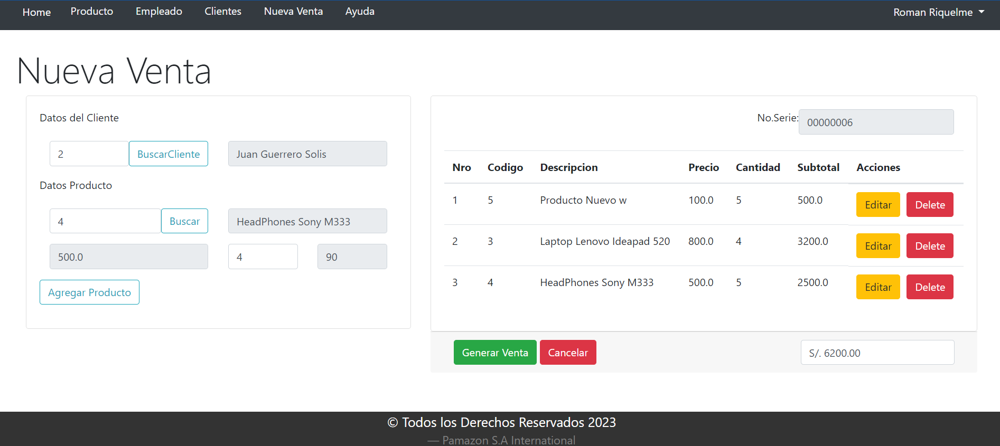
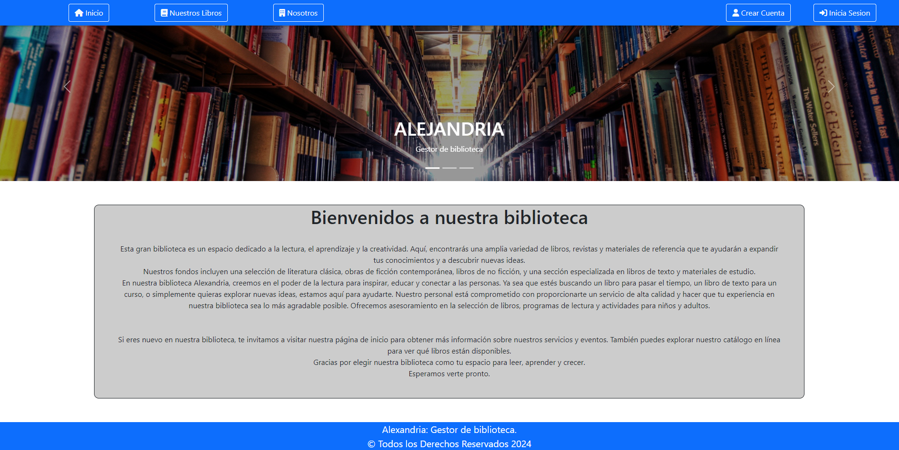
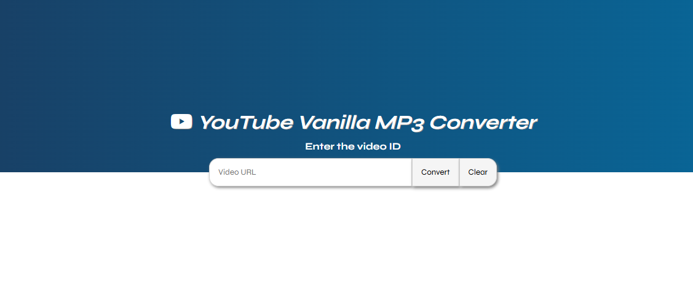

Desarrollador Full Stack con más de 1 año de experiencia en el sector financiero y consultoría TI. Especializado en backend con Java, APIs REST y bases de datos (Oracle, MySQL), con experiencia en desarrollo de soluciones escalables y trabajo en equipos ágiles bajo Scrum y Kanban.
Soy Desarrollador de Software graduado de la Universidad Francisco José de Caldas, con más de un año de experiencia en el desarrollo de aplicaciones y gestión de bases de datos, especialmente en entornos del sector financiero y consultoría TI. Me he especializado en backend con tecnologías como Java, PHP, C# .NET y Python, así como en el manejo de bases de datos relacionales (Oracle, MySQL – PL/SQL). Además, utilizo herramientas como Git y GitHub Copilot para optimizar el desarrollo y asegurar la calidad del código.
Cuento con experiencia trabajando en equipos multidisciplinarios bajo metodologías ágiles como Scrum y Kanban, participando en células de desarrollo orientadas a la entrega continua de valor. Actualmente estoy fortaleciendo mis habilidades en tecnologías Full Stack como Node.js, React y AWS, con el objetivo de construir soluciones escalables, eficientes y alineadas a las necesidades del negocio.
Universidad Distrital Francisco José de Caldas
Organizar, gestionar y optimizar datos y sistemas informáticos de forma integral. Con fuerte énfasis en programación, bases de datos, redes y herramientas modernas como IA, te prepara para trabajar en desarrollo de software, administración de datos, soporte TI y emprendimiento tecnológico.
Experiencia en el desarrollo de aplicaciones dentro del sector financiero y entornos de consultoría TI, participando en la construcción de soluciones backend y full stack. Desarrollo de APIs REST, integración de sistemas y gestión de bases de datos relacionales.

Sistema web orientado a gestión de transacciones, simulando procesos del sector financiero. Desarrollo backend con Java JSP, manejo de base de datos SQL e implementación de lógica de negocio.

Aplicación web para gestión de inventario con PHP y MySQL, implementando operaciones CRUD y control de datos persistentes.

Aplicación desarrollada con Node.js que permite la conversión de contenido multimedia, aplicando lógica backend y consumo de servicios externos.
API REST desarrollada con Java y Spring Boot para gestión de ingresos y gastos, con autenticación, persistencia de datos y arquitectura escalable.
En Desarrollo
En Desarrollo